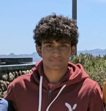

|
Aditya Pericherla
I'm an EECS undergraduate at UC Berkeley working on robot learning and embodied AI.
I'm a robotics research intern in the Agile Robotics and Perception Lab at Berkeley AI Research (BAIR), where I work on JEPA-based visual pose estimation and model predictive control for quadrotors.
This summer I was a deep learning engineer intern at Apptronik, fine-tuning vision-language-action policies for the Apollo humanoid.
Email /
Phone /
LinkedIn /
GitHub
|

|
Education |
Aug 2025 – May 2028
Berkeley, CA |
University of California, Berkeley
B.S. in Electrical Engineering and Computer Sciences (EECS) · GPA 3.90
Coursework: Machine Learning, Statistics and Probability, Linear Algebra, Optimization
|
Publications |
| In preparation |
RGB-D JEPA-Style Navigation for Quadrotors
Aditya Pericherla, Pratyaksh Rao
Target: Nature, 2026
Extends SkyJEPA to RGB-D, JEPA-style navigation for quadrotors. Agile Robotics and Perception Lab, in collaboration with Yann LeCun's lab.
|
| 2024 |
A Custom Convolutional Neural Network to Streamline Oral Disease Detection and Screening
Aditya Pericherla
Journal of High School Science (JHSS), 2024
Streamlining oral disease detection with CNNs and transfer learning.
|
Experience |
Jun 2026 – Aug 2026
Austin, TX |
Deep Learning Engineer Intern, Apptronik
- Fine-tuned the NVIDIA GR00T vision-language-model backbone and flow-matching DiT action head for pick-and-place tasks on the Apollo 2 humanoid, reaching an 80% task success rate across 50 real-world rollouts and 10K training iterations.
- Built a containerized Kubernetes workflow orchestration framework with MuJoCo and Isaac Sim backends, cutting closed-loop vision-language-action (VLA) policy evaluations from 2 hours to 10 minutes (12x) via parallel rollout sharding.
- Designed an automated test matrix of 50 test cases across 4 system configurations, enabling regression testing across all tested VLA policies.
- Implemented an end-to-end evaluation pipeline with MinIO-compatible object storage, automating ingestion of 200+ MCAP episodes (1TB+ of telemetry).
|
Jul 2026 – Present
San Francisco, CA |
Quantitative Research Engineer, Stealth Startup
- Developed a span-attribution model over a ModernBERT base encoder to decompose 1K+ news articles into signal spans, optimizing for the information coefficient between predicted signals and future asset returns.
- Applied INT8 quantization and mixed-precision inference across model configurations via TensorRT/bitsandbytes, reducing memory 35% and p99 latency with less than 2% IC degradation.
- Profiled 3 hardware architectures (RTX 5070, Jetson Orin, FPGA) with Nsight Compute, analyzing latency and memory bandwidth tradeoffs for deployment.
|
Sep 2025 – Present
Berkeley, CA |
Robotics Research Intern, Agile Robotics and Perception Lab | UC Berkeley BAIR
- Developing an efficient visual pose estimation pipeline for quadrotors via JEPA latent-space prediction, achieving 40–50 ms policy inference on hardware (in collaboration with Yann LeCun's lab).
- Building a hierarchical training stack (TCN encoders, GRU predictor, and SIGReg loss) to drive model predictive path integral (MPPI) control at 100 Hz over ROS2 using RGBD and proprioception input.
- Built a custom simulator to evaluate TCN/RNN architectures on gradient-based (acados/L4CasADi) model predictive control of the quadrotor, identifying TCN as the strongest candidate due to gradient stability across long-horizon tasks.
|
Aug 2025 – May 2026
Berkeley, CA |
Machine Learning Engineer, Olera Health | SkyDeck Pad-13
- Created an ML-driven nutrition profiling system serving health products (50+ product catalog) to 300+ users, improving Precision@K by 18–20%.
- Developed a multi-agent Text-to-SQL system over an 80+ table Postgres schema with schema linking and execution-guided decoding, reaching 89% accuracy on a 500-query evaluation set.
- Performed exploratory data analysis (PCA, t-SNE, k-means) on 200 records × 30 features, identifying 8 behavioral clusters used to understand user categorization.
|
Selected Projects |
|
Neuro-Interpretability
Extracted emotion steering vectors from Pythia 14M–2.8B via contrastive means, tracking semantic, geometric, and causal-steering validity and finding non-monotonic emergence at 410M.
|
|
LeRobot SO-ARM101
Imitation learning and online reinforcement learning on real hardware via LeRobot.
|
|
GraphReason
Multi-document RAG over 20+ PDFs with a Neo4j knowledge graph.
|
|
Trained ViT
Vision Transformer trained on CIFAR-100 with bf16, a cosine learning-rate schedule, and RandAugment.
|
Notable Achievements |
| 2025 |
1st Place, CalHacks (Sui Blockchain Track) — the largest college hackathon in the world, with 2,000+ hackers |
| 2024 |
SIN Physics Exam — Distinction, awarded to the top 10% of candidates (200 of 2,000 participants) |
| 2024 |
Gold, Infinity Mathematics Olympiad — among 1,000+ attendees from 7 countries |
| 2023 |
Uber Virtual Global Hackathon — Asia-Pacific Winners — redesigned the app for user and driver accessibility |
Skills |
| Languages |
Python, Java, SQL, C++, CUDA |
| AI / ML |
PyTorch, TensorFlow, HuggingFace Transformers, scikit-learn, LangChain, Pandas, NumPy/SciPy |
| Robotics |
Isaac Sim, MuJoCo, ROS2, acados/L4CasADi, MCAP |
| Infrastructure |
PostgreSQL, MongoDB, Pinecone, Redis, AWS (EC2, S3), Docker, Kubernetes, Airflow, MinIO |
|